CRYPTON
CRYPTON
Sitio oficial y de documentación.
Bienvenido!
Aqui encontraras toda la documentación sobre el programa.
Aqui encontraras toda la documentación sobre el programa.
Empleado
Si queres usar la aplicación como un empleado se te notificara por email que tu usuario fue dado de alta ya que no podes hacerlo vos mismo.
Funcionalidades:
Podras acceder a las siguientes acciones dado tu perfil.
Podras acceder a las siguientes acciones dado tu perfil.
Calcular cobros:
Proposito:
Poder consultar el total en dinero de cobros pendientes y realizados en base a una fecha.
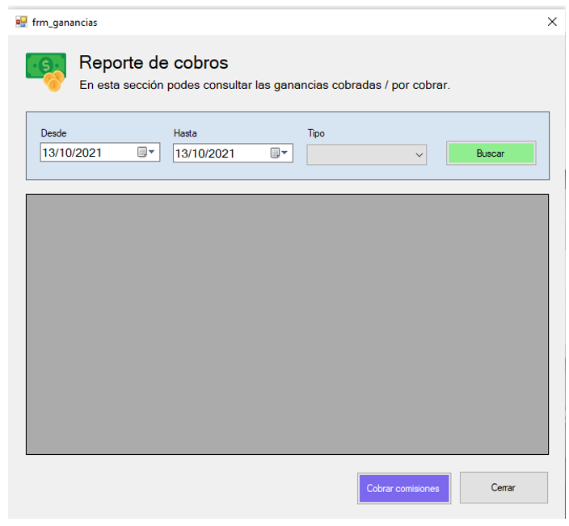
¿Como funciona?:
Proposito:
Poder consultar el total en dinero de cobros pendientes y realizados en base a una fecha.
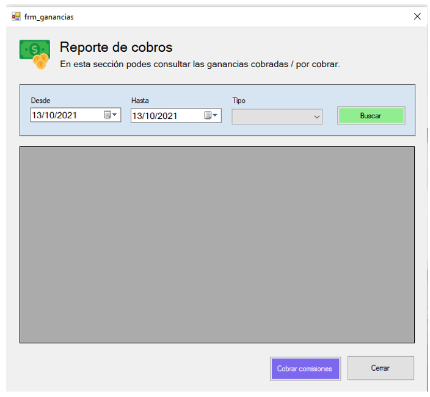
¿Como funciona?:
- 1) El cliente ingresa al módulo de consulta de cobros.
- 2) Se despliega la pantalla al usuario.
- 3) El usuario selecciona el rango de fechas por cobrar y si filtra por comisiones cobradas o por cobrar.
- 4) Se procesa la consulta se realiza el cálculo y se despliega en pantalla.
- 5) El cliente cierra el módulo de consulta.
Recolectar comisiones:
Proposito:
Permitir recuperar las ganancias de las operaciones realizadas por los clientes.
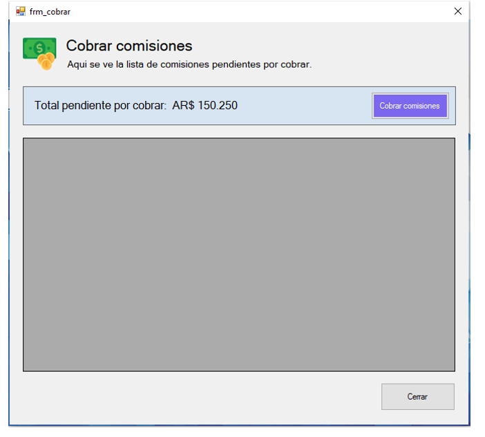
¿Como funciona?:
Proposito:
Permitir recuperar las ganancias de las operaciones realizadas por los clientes.
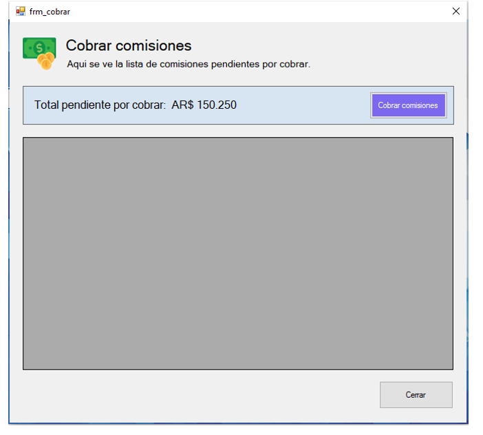
¿Como funciona?:
- 1) El usuario desde el modulo de reporte de cobros hace click en el botón de cobranzas.
- 2) Se despliega la pantalla del módulo de cobro de comisiones.
- 3) Se buscan todas las comisiones pendientes de cobro.
- 4) Se hace la suma del costo de todas las comisiones y se muestra en la pantalla.
- 5) El usuario hace click en el botón de “Cobrar comisiones”.
- 6) Se procesa el débito de cada comisión en cada una de las billeteras correspondientes, si posee el monto suficiente.
- 7) Se envía una notificación interna al cliente del cobro realizado.
- 8) El usuario hace click en cerrar.
- 9) Se cierra el modulo.
Consultar deudores:
Proposito:
Poder obtener el estado actual de deudas pendientes a cobrar a los clientes.
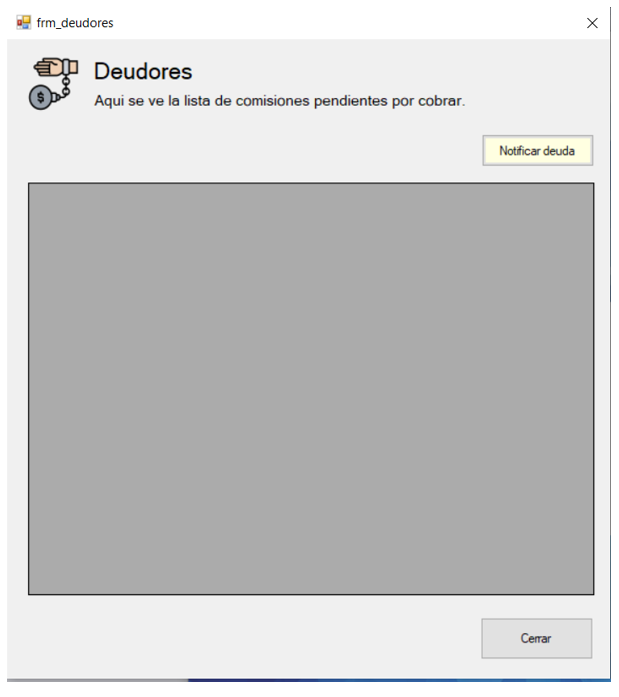
¿Como funciona?:
Proposito:
Poder obtener el estado actual de deudas pendientes a cobrar a los clientes.
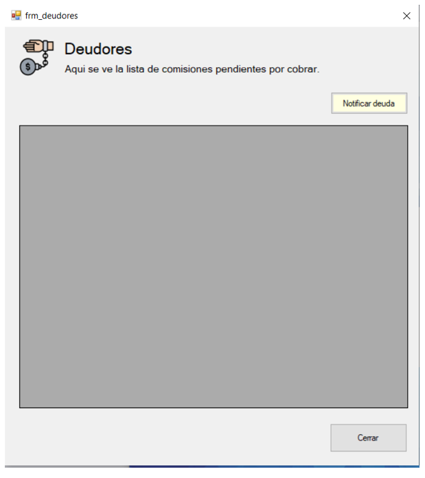
¿Como funciona?:
- 1) El cliente ingresa al módulo consulta de deudores.
- 2) Se recopila la información de clientes con comisiones pendientes a cobrar.
- 3) Se despliega en la pantalla el listado con las comisiones pendientes y totales en ARS.
- 4) El usuario hace click en un registro, luego hace click en “Notificar deuda”.
- 5) Se envía una notificación interna al cliente.
- 6) Se envía un email al cliente recordándole su deuda.
- 7) El usuario hace click en cerrar.
- 8) Se cierra la pantalla.
Bloquear cliente:
Proposito:
Permite cambiar el estado del usuario.
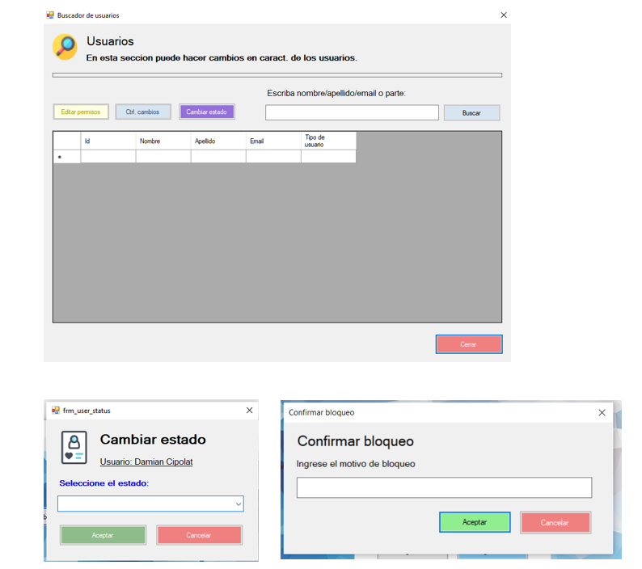
¿Como funciona?:
Proposito:
Permite cambiar el estado del usuario.
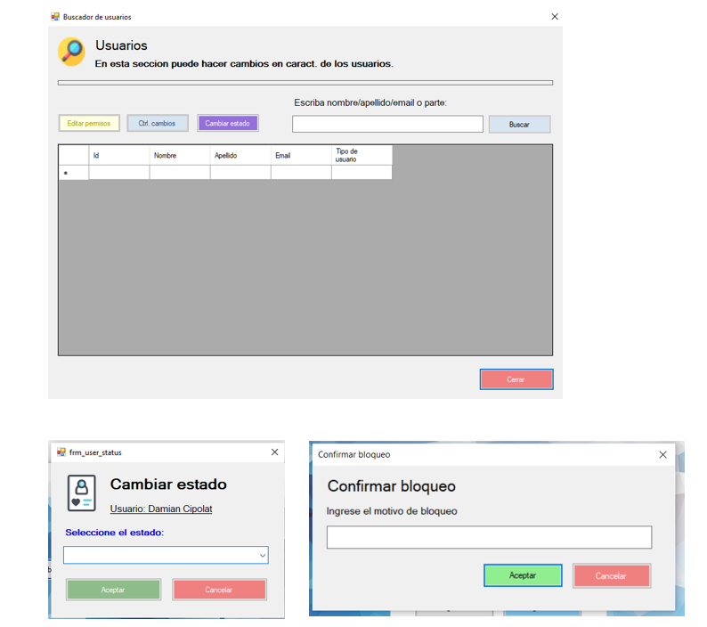
¿Como funciona?:
- 1) El usuario estando en el módulo de búsqueda de usuarios, selecciona un usuario y hace click en el botón de “cambiar estado”.
- 2) Se despliega la interfaz de estado de usuario, mostrando nombre, apellido y un combo.
- 3) El usuario selecciona la opción de “bloqueado” y hace click en aceptar.
- 4) La interfaz despliega una ventana para ingresar el motivo por el cual se desea bloquear a este usuario.
- 5) El usuario ingresa el motivo del bloqueo y hace click en aceptar.
- 6) Se reciben los datos y se procesa el bloqueo del usuario, se envía un aviso al email que este tiene registrado notificando esta situación, se cierra la pantalla.
Acreditar fondos:
Proposito:
Poder acreditar fondos en la billetera en ARS de un cliente.
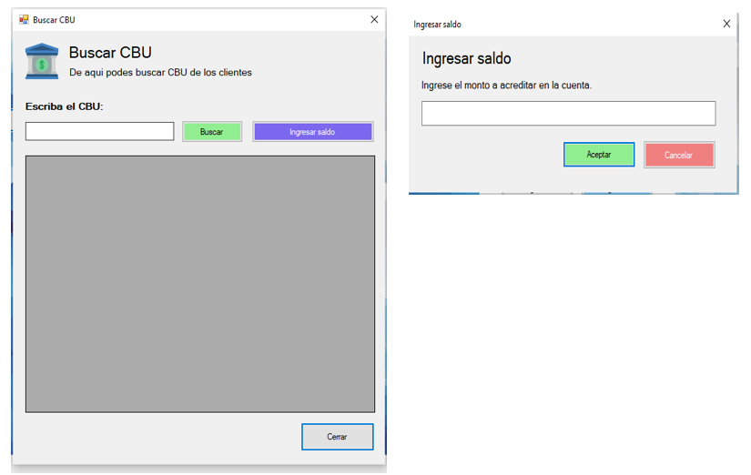
¿Como funciona?:
Proposito:
Poder acreditar fondos en la billetera en ARS de un cliente.
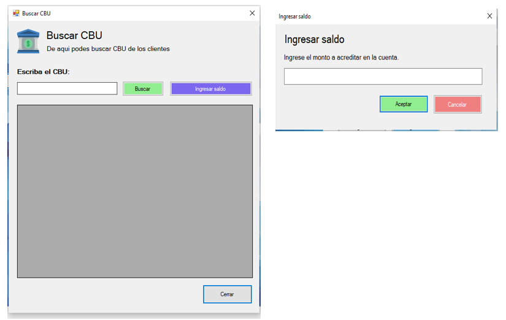
¿Como funciona?:
- 1) Ingresar al modulo banco / Ingresar saldos.
- 2) Se despliega la pantalla.
- 3) Se ingresa el cbu a donde se acreditaran los fondos, luego se hace click en buscar.
- 4) Se busca el cbu en la bd y se retorna en la grilla el cliente a quien corresponde.
- 5) Hace click en el cliente y luego click en el botón “Ingresar saldo”.
- 6) Se despliega una ventana con un campo para ingresar el valor.
- 7) Ingresa el valor y hace click en aceptar.
- 8) Se valida el valor si es numérico y se actualiza el saldo de la billetera correspondiente con el nuevo monto.
- 9) Se registra una solicitud de ingreso de dinero como procesada, se muestra un cartel de “Operación completada”.
- 10) Hace click en cerrar
- 11) Se cierra la pantalla del módulo de búsqueda de cbu.
Procesar extracción:
Proposito:
Administrar las operaciones de extracción de dinero.
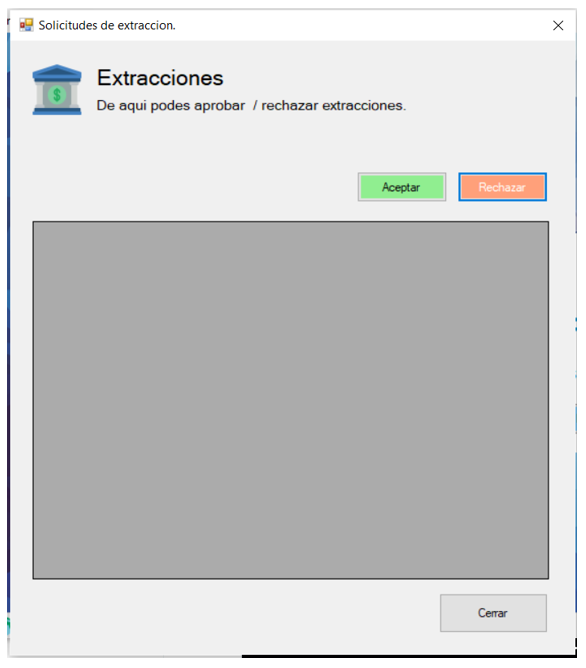
¿Como funciona?:
Proposito:
Administrar las operaciones de extracción de dinero.
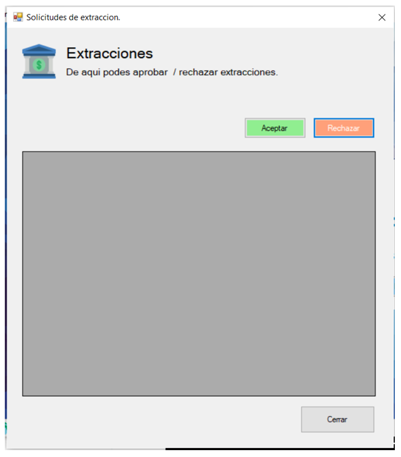
¿Como funciona?:
- 1) Ingresar al módulo banco / Solicitud de extracciones.
- 2) Se despliega la pantalla, mostrando la lista de solicitudes de extracción.
- 3) El usuario selecciona una solicitud y hace click en “aceptar”.
- 4) Se registra como aprobada la solicitud y se hace el descuento en la billetera del cliente del monto asociado.
- 5) Se actualiza la grilla desapareciendo esta solicitud.
- 6) Hace click en Cerrar.
- 7) Se cierra la pantalla del módulo.